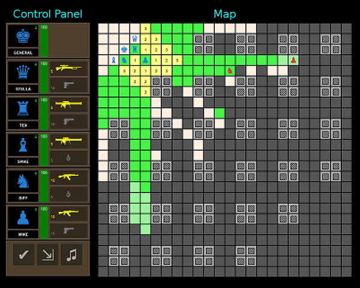
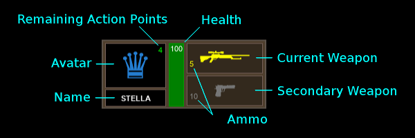
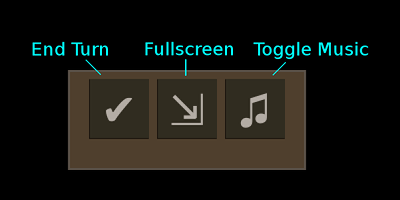
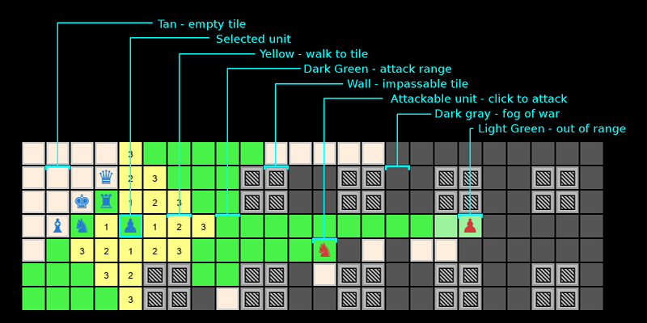

Taktyka
Welcome to Taktyka!
Taktyka is a turn-based tactical game inspired by Jagged Alliance. Taktyka is an entry for Gynvael's Winter GameDev Challenge 2017 (reddit).
Two teams of six units fight to the death on a 24x24 board.
You play as the blue team.
You must protect your General! When your General dies, you lose.
How to play
Each turn you must strategically spend action points. Use action points to move or attack.
Each unit has a maximum of 4 action points. At the beginning of each turn, all 4 action points will be replenished. Any remaining action points are lost at the end of a turn. Use it or lose it!
Click on a unit to select.
When a unit is selected, click on a yellow tile to move to that tile. Moving costs one action point per tile. Each individual move is restricted to the four cardinal directions (north, east, south, west).
Use the early turns to find cover. It is only a matter of time before you will encounter the enemy.
When a unit is selected, click on an enemy highlighted in green to attack that enemy. Attack costs vary by weapon:
- Pistol costs one point per attack
- Grenades and assault rifle cost two action points
- The sniper rifle and rocket launcher cost four action points per shot
User Interface
The main interface is separated into two components:
- Control Panel on the left
- Map on the right

Control Panel
Each of your units is visible on the control panel.

- Click on the unit avatar to select the unit
- Click on weapons to change the active weapon
There are 3 special buttons at the bottom of the control panel:

- End Turn - Ends your current turn and let's the AI begin
- Fullscreen - Enters fullscreen mode
- Toggle Music - Turns the music on and off
Map
Tiles are either empty or have a wall. Units can walk on empty tiles.
When a unit is selected, tiles are highlighted with available actions:

Characters
Here is your team:
| ♚ | General | None | None |
| ♛ | Stella |  Sniper Rifle |
 Pistol |
| ♜ | Tex |  Rocket Launcher |
Pistol |
| ♝ | Spike | Rocket Launcher |
Hand Grenade |
| ♞ | Biff |  Assault Rifle |
Hand Grenade |
| ♟ | Mike | Assault Rifle |
Pistol |
Weapons
Weapons have different attributes that make them better/worse for different situations:
- Action Points - how many AP to fire one shot
- Range - how far away an enemy can be
- Damage - how many health points an enemy will lose
| Name | Action Points | Range (tiles) | Damage |
|---|---|---|---|
Pistol |
1 | 8 | 10 |
Hand Grenade |
2 | 4 | 50 |
Assault Rifle |
2 | 12 | 20 |
Rocket Launcher |
4 | 12 | 50 |
Sniper Rifle |
4 | 16 | 75 |